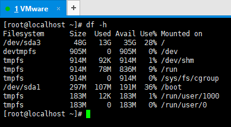
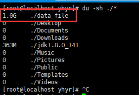
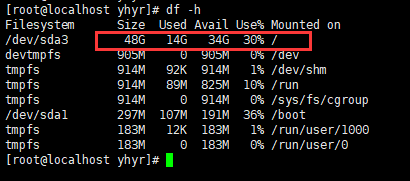
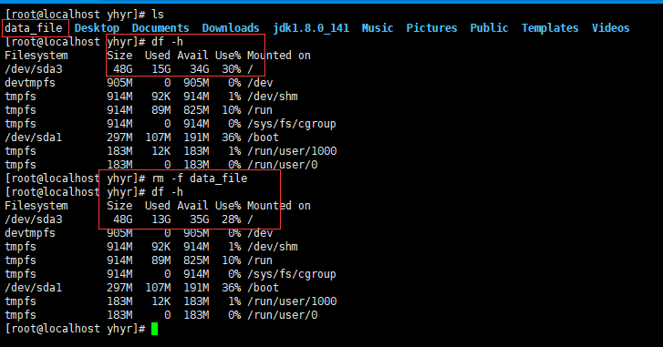
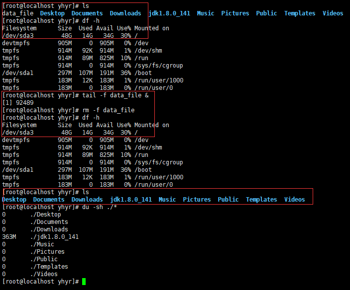

Linux磁盘空间释放
基于文件伪删除的问题，进一步学习和了解Linux相关的命令和文件系统
概述
在近期的实际工作中，遇到过几次因为磁盘空间满而导致服务不可用的情况，所以免不了要对系统进行清理。 在最开始的几次清理过程中，通过删除一些大日志文件可以得到立竿见影的效果，所以就没怎么注意；但是在最近一次的清理过程中，发现根目录的使用率已经到达百分百，但是并没有在根目录下发现有什么大文件，所以无法仅通过rm -rf ***这种简单粗暴的方式来解决问题。
问题分析
问题描述
说起被删除文件的磁盘空间并未释放问题，还存在一个与之类似的说法：df、du结果不一致，这两个问题在很大程度上指的是一回事：即就是被删除文件在被执行rm命令时，还有其他进程在操作该文件；所以该文件只是被标记为“deleted”，而非立马被删除；除非等到操作该文件的所有进程都结束后该文件才会被删除。
实践
俗话说好记性不如赖笔头，既然知道了原因，那就亲自实践一下，在验证结论正确与否的同时加深记忆也未尝不可。
首先执行命令df -h，可以看到当前机器的根目录的大小为48G，可用空间为35G；

然后在当前用户目录(/home/yhyr)下新建一个数据文件，为了提升试验的效果，这里生成文件的大小为1G；数据文件生成 命令dd if=/dev/zero of=./data_file bs=1M count=1024；然后分别查看当前目录的文件大小信息du -sh ./*和磁盘的占用情况df -h


可以看到此时相较于之前35G的可用空间，现在已经少了一个G，符合我们的预期。接下来分别验证一下有无进程操作下，删除数据文件后磁盘空间的使用情况：
场景一：当没有任何进程操作该数据文件时，执行rm -f data_file后磁盘空间成功释放了1G的空间，执行结果如下所示：

场景二：首先通过tail data_file &模拟操作该数据文件，然后删除该文件并查看磁盘空间的释放情况：

这样就可以复现磁盘空间未释放的情况；然后通过lsof | grep data_file查看文件的占用信息：

通过lsof命令可以看到该文件被tail进程所占用，对应的进程PID为92489，文件的路径即就是当初删除前文件的实际路径，只是目前被标记为deleted；现在通过kill -9 PID命令杀死tail进程后，磁盘空间信息如下所示：

到这有关如何解决因为进程占用而导致磁盘空间无法释放的问题应该都已有所了解；因为这个问题看起没什么难度，网上有关此问题的描述也要很多，在这里就不做过多的赘述。接下来基于此次问题的发现和实践解决过程，更进一步的了解一些有关系统监控基本系统监控命令、进程命令，来提升问题的排查和定位能力。
du & df
du(disk usage)
面向文件的命令；通过计算文件的大小来统计指定目录磁盘的使用情况；通俗的讲就是计算文件具体的占用空间
常用命令
du -sh统计当前目录的总大小
du -sh ./*查看当前目录下各文件(文件夹)的大小，不统计隐藏文件(夹)
du -h --max-depth=1查看当前目录下各文件(夹)的大小【囊括隐藏文件(夹)】；等价于du -h -d 1
df(disk free)
面向文件系统的命令；通过文件系统获取分区信息；Eg：分区大小、使用量、剩余量、使用率
常用命令
df -h
lsof
lsof(list open file)，列出打开文件；
Process & PID & Port
PID查看对应的进程信息
方案一：通过ps命令查看
1 | ps -aux | grep pid |
方案二：进入进程目录查看
1 | Step 1 |
查看端口占用
方案一：lsof -i:PID
方案二：netstat -nlp | grep PID